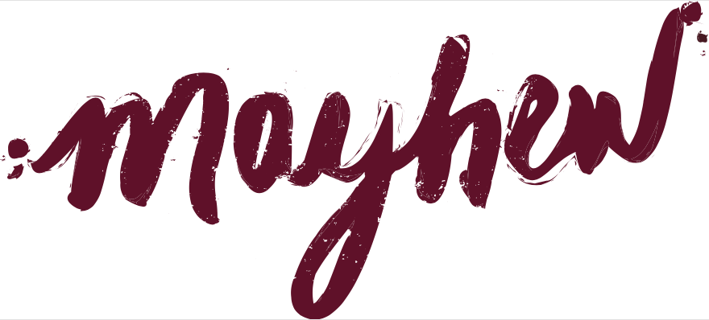

20 Melcher Street, Boston,MA 02210
Hours Monday-Saturday 11am-10pm, Sunday 12pm-5pm
Mayhew Wine Shop features 200+ distinct wines from around the world, organized by wine region, to include: France, USA, Italy, Chile, Argentina, Spain/Portugal, South Africa, Australia, New Zealand, and Germany/Austria There is a heavy concentration of labels from France, Italy and USA – as these countries represent classic wine growing regions in Old World and New World style. The other countries will be represented by a smaller volume of labels, carefully selected for their quality representation of territory. An Enomatic Wine Tasting System will be featured within the store to allow for easy, temperature controlled wine-tastings and education. Tasting is encouraged at Mayhew!
Unique Craft Beer is sourced locally in New England. Twenty five options are available consistently, with a steady rotation of more unusual offerings. Featured “craft beer of the week” is made available for tasting. Learn the story behind the brewers that create these amazing liquids!
Specialty food from local farms and artisans include: cheese, breads, crackers, jams, spreads, chocolates and more. Mayhew’s Food and Beverage Specialists are available to create beautiful collections of wine, beer, and food for personal enjoyment or gift-giving. It’s all in the pairing!

Special access to limited release wine and craft beer selections recipes and pairing ideas for monthly featured wines
Invitations to special promotional events access to seasonal private tastings for members only
We maintain a custom profile for each Member, recording purchasing history, likes and dislikes, and recommendations for the future.
We are passionate about specialized product offering, inviting ambience, educational opportunity, and social experience – all of which stems from tasting!! Join us.
Daily, casual tastings : An Enomatic Wine Tasting System will be featured in a small bar and seating area to allow for easy, temperature-controlled wine-tastings and education. This system is operated by store staff and preserves freshness of the wine. Featured bottle selections are changed on a weekly basis and each featured bottle is available for sale within the wine shop. There are 6 tasting options each week.
We encourage you to attend our in-store tastings every Wednesday and Saturday, 4-7. Each week we focus on a different region, varietal, or trend for your learning and enjoyment. Our Wine Specialists provide fun tips on how to maximize the pleasure of your wine tasting experience.
With wine, beer, and food pairings: We offer a unique tasting experience in our Special Events space 4 times per year in which industry experts guide us through the seasons bounty with regards to wine, beer, and food. Tips will be given on pairings, as well as recipes and special discounts.
For Club Members: Club Members are invited to participate in specialty tastings throughout the year as new or limited production wine or craft beer becomes available. Members will have first access to purchase small batch product
Fort Point is a destination neighborhood within the Seaport District with established residences, hotels, and restaurants attracting professionals, residents, and tourists to a lively waterfront, city lifestyle. The neighborhood is characterized by large old brick buildings that were owned and operated by The Boston Wharf Company in the 1800s and used for manufacturing and warehousing. Over the years the neighborhood developed a strong artist community and the brick buildings offered the perfect enclave for artist lofts and studios. The neighborhood continues to evolve and the artist community is now joined by innovative businesses, professional institutions, and much more.
The atmosphere of Mayhew Wine Shop is characterized by open space, natural elements, art work, music, and accents that elicit feelings of “wine culture” – and settles into the welcoming environs at 20 Melcher Street, Fort Point. Warm, inviting, friendly and approachable. We bring you a neighborhood experience that is a reflection of the Fort Point vibe, yet reminiscent of wine country and a vineyard tour that inspires excitement about wine and where it comes from.
Fort Point Arts Community: Mayhew Wine Shop is a member of FPAC and looks to sponsor local artists with rotation of art work throughout the event space within the shop. Opportunity for special artist events within event space.www.fpac.com
B*Cured: Mayhew Wine Shop is a dedicated supporter of B*Cured. B*Cured’s mission is to end brain cancer by funding innovative research grants. To date, B*Cured has awarded 14 grants to investigators searching for a cure for brain cancer at nationally ranked universities and hospitals. Mayhew Wine Shop has a featured wine every month to fill “Pat’s glass”. Patrick Kelly died of brain cancer at the young age of 38 in February 2016 and was the cousin of Priscilla and John Murphy(principal owners of Mayhew). 15% of all proceeds from Pat’s glass are donated to B*Cured
A special events space/tasting room is available to rent at the back of Mayhew Wine Shop. It is accented by sliding barn doors that can be open to the rest of the shop or closed for a more private feel. The tasting room has 2 large rustic wood tasting tables, custom cabinetry and surfaces, and can accommodate up to 50 people. The original stone wall in the room creates an authentic wine cave feel.
Please come enjoy a tasting at Mayhew!
GE will be moving its Corporate Headquarters to Fort Point in 2017. Just steps away from Mayhew Wine Shop
Priscilla Mayhew Murphy opens the doors of Mayhew Wine Shop with her brother and business partner John Murphy; and the helping hands of other close family members and friends.
The creation of this idyllic wine shop has been a dream of Priscilla’s for over 10 years and she has spent countless hours spinning thoughts on how to create a wine lover’s perfect shopping paradise in a cool urban neighborhood.
Mayhew Wine Shop offers you a selection of the finest wines, craft beers, and specialty gourmet provisions at competitive cost.
Enabling you to experience product appreciation, learning, and culture in a visually appealing and inspiring community environment characterized by positive relationship building. Mayhew sets itself apart by consistently providing the best in product, atmosphere, and experience.
Comes from a professional background in landscape design and forever holds appreciation for the earth, land, nature, and all that it provides. From a young age, her father, Jeremiah Murphy, taught his children about fine wine from abroad: Gewurztraminer from Germany;
Riesling from Alsace; Chablis, Sancerre, Sauternes, and Bordeaux from their respective corners of France; perfectly aged Port from Portugal; Madera from Spain.
The key to the unique taste and flavor is the territory within which the grapes are grown and the varying conditions that affect the growth period.
You can literally taste the characteristics of the territory. Priscilla has carried this territory appreciation throughout her adult years as she has furthered her wine education through classes, vineyard visits, and constant tasting. It is her mission to share this passion with others and expose people to places they may or may not go, but can experience through taste.